Portfolio · Community managementPortfolio · Community management
Meryem
Ait Nassir.
Community manager & créatrice de contenu digitalCommunity manager & digital content creator
Depuis juin 2024, j'anime les réseaux sociaux de deux marques de formation à Marrakech : CCL, centre de formations certifiantes pour les professionnels, et Schoolaris, plateforme de soutien scolaire en ligne. Pour chaque publication, je pars d'une question simple : qu'est-ce que la personne qui la voit veut savoir ? J'écris l'accroche et le texte, je prépare le visuel, je publie, puis je réponds aux commentaires et aux messages jusqu'à l'inscription. Since June 2024, I have been running the social media of two education brands in Marrakech: CCL, a certified training centre for professionals, and Schoolaris, an online tutoring platform for school students. For every post I start from one simple question: what does the person seeing it want to know? I write the hook and the copy, prepare the visual, publish, then answer comments and messages until the person signs up.
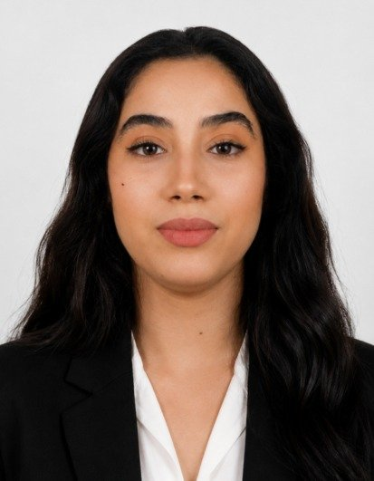
Ce que je faisWhat I do
Du message à la conversionFrom message to conversion
Animation & publicationRunning & publishing
Planification et publication des contenus sur Instagram, Facebook et TikTok avec Meta Business Suite et des outils de planification.Planning and publishing content on Instagram, Facebook and TikTok with Meta Business Suite and scheduling tools.
Rédaction & messagesCopy & messaging
Accroches, légendes et textes pensés pour chaque public. Je structure chaque visuel : accroche, avantages, preuve, appel à l'action.Hooks, captions and copy written for each audience. I structure every visual: hook, benefits, proof, call to action.
Création de visuelsVisual creation
Posts, carrousels et stories sur Canva, et briefs pour l'équipe graphique quand le projet le demande.Posts, carousels and stories in Canva, and briefs for the design team when a project needs it.
Communauté & prospectsCommunity & leads
Modération des commentaires et messages, réponses automatiques ManyChat, emailing Brevo et orientation de chaque prospect.Moderating comments and messages, ManyChat auto-replies, Brevo emailing and guiding every lead.
ParcoursBackground
Mon expérienceMy experience
Juin 2024 · aujourd'huiJune 2024 · present
Community manager · CCL
Centre des Compétences & Leadership, Marrakech · aussi pour SchoolarisCentre des Compétences & Leadership, Marrakech · also for Schoolaris
- J'anime les réseaux sociaux du centre et je publie les contenus.I run the centre's social media and publish the content.
- Je modère les commentaires et les messages, et j'oriente les prospects vers la bonne formation.I moderate comments and messages, and guide leads to the right programme.
- J'écris les publications, les accroches et les textes de communication.I write the posts, hooks and communication copy.
- Je crée des visuels et des supports promotionnels et pédagogiques pour les formations.I create visuals plus promotional and teaching materials for the programmes.
- Je rédige et structure des scripts de cours, avec l'aide d'outils d'IA.I write and structure course scripts, using AI tools.
Déc. 2023 · févr. 2024Dec 2023 · Feb 2024
Assistante de directionExecutive assistant
Bureau de traduction agréé, Marrakech · relation client, agendas, documents confidentielsCertified translation office, Marrakech · client relations, schedules, confidential documents
Mars · avril 2023Mar · Apr 2023
Stagiaire cloudCloud intern
Menara Préfa, Marrakech · solutions cloud, environnements virtuels, bases de donnéesMenara Préfa, Marrakech · cloud solutions, virtual environments, databases
CertificationCertification
Certificat de compétences en marketing digitalCertificate in digital marketing
FormationEducation
Technicienne spécialisée en infrastructure digitale, option cloud · ISTA NTIC SYBA (2021-2023)Specialised technician diploma in digital infrastructure, cloud option · ISTA NTIC SYBA (2021-2023)
DUT Économie et gestion · FSJES Marrakech (2018-2020)Two-year degree in economics and management · FSJES Marrakech (2018-2020)
LanguesLanguages
Arabe et français courants, anglais opérationnelFluent Arabic and French, working English
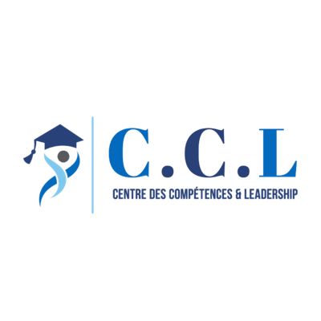
Étude de cas 1 · Formation continueCase study 1 · Professional training
CCL · Centre des Compétences & Leadership
Le contexteContext
CCL propose des formations certifiantes 100 % en ligne pour les professionnels au Maroc et en Afrique francophone : santé, finance, management, BTP, audit.CCL offers 100% online certified programmes for professionals in Morocco and French-speaking Africa: health, finance, management, construction, audit.
L'objectifGoal
Lancer plus de 28 formations sur Instagram et Facebook avec une identité reconnaissable, et donner envie à des cadres très occupés de s'inscrire.Launch more than 28 programmes on Instagram and Facebook with a recognisable identity, and make busy professionals want to sign up.
Ce que j'ai faitWhat I did
- Un système de 3 posts par formationA 3-post system per programme
- 2 vidéos verticales par formation (programme + débouchés)2 vertical videos per programme (syllabus + career outcomes)
- Annonces adaptées à 14 pays d'Afrique francophoneAd copy adapted to 14 French-speaking African countries
La structure, les messages et les briefs sont de moi. Les visuels ont été réalisés en partie par l'équipe graphique, en partie par moi sur Canva.The structure, messaging and briefs are mine. The visuals were made partly by the design team and partly by me in Canva.
Un système de 3 posts par formationA 3-post system per programme
Chaque formation sort en série : l'annonce complète, la preuve sociale, puis une version épurée pour la relance. Même gabarit pour toutes les formations, donc un fil Instagram cohérent.Each programme is released as a series: the full announcement, the social proof, then a clean version for the reminder. One template for every programme keeps the Instagram grid consistent.


Le même système, décliné par domaineThe same system across fields
Santé, finance, audit, BTP, gestion de projet : un portrait métier différent, une promesse claire, les mêmes repères (week-end, 100 % en ligne, double certification).Health, finance, audit, construction, project management: a different professional portrait, one clear promise, the same anchors (weekends, 100% online, double certification).
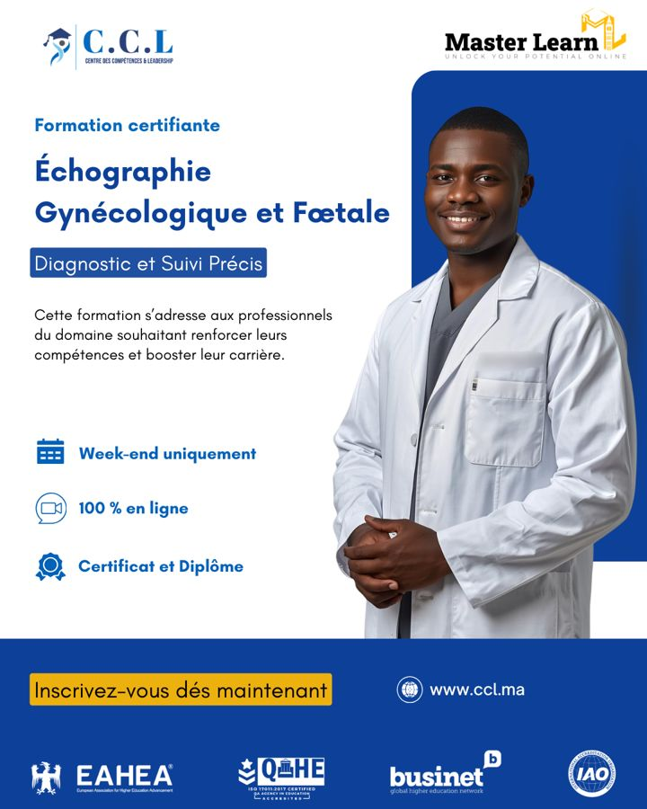
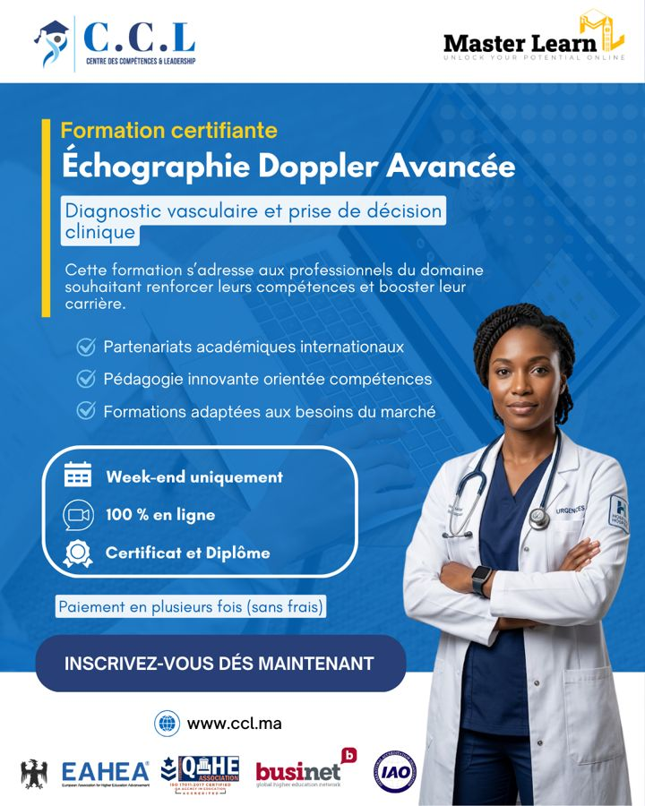
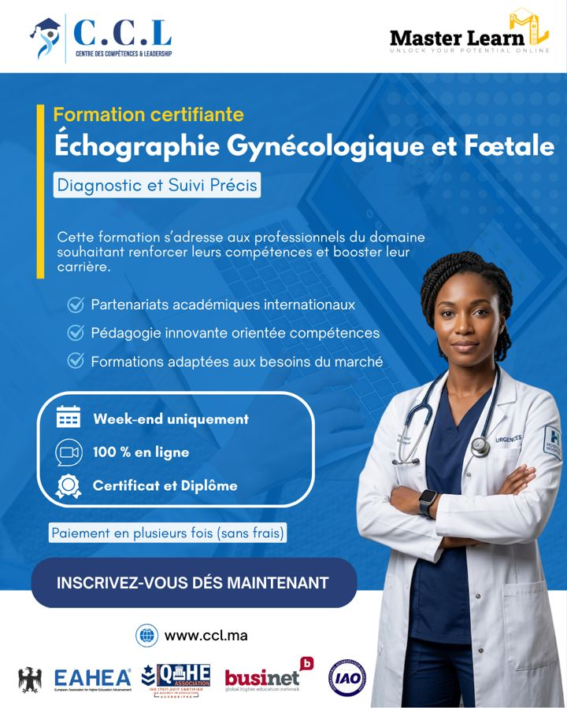
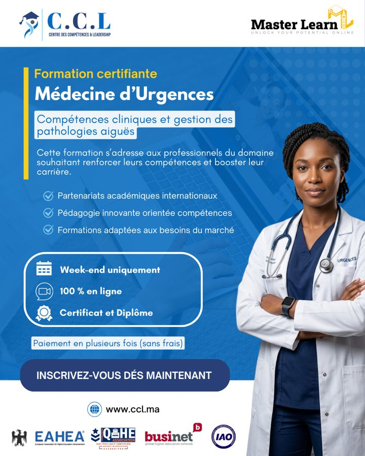
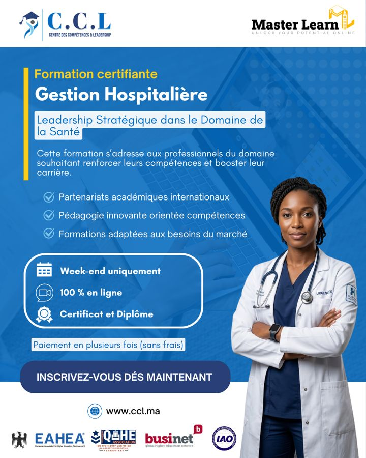
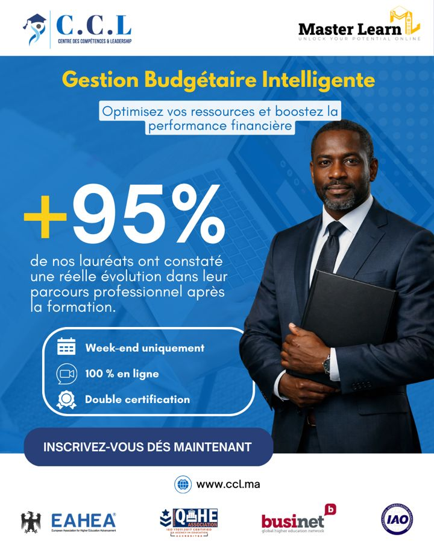
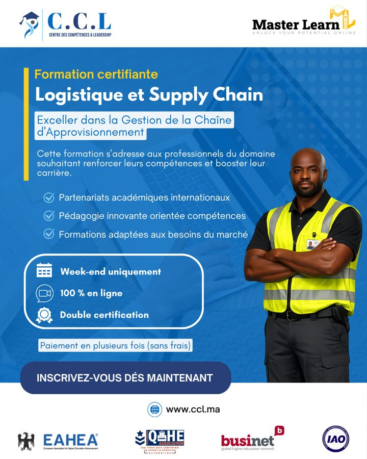
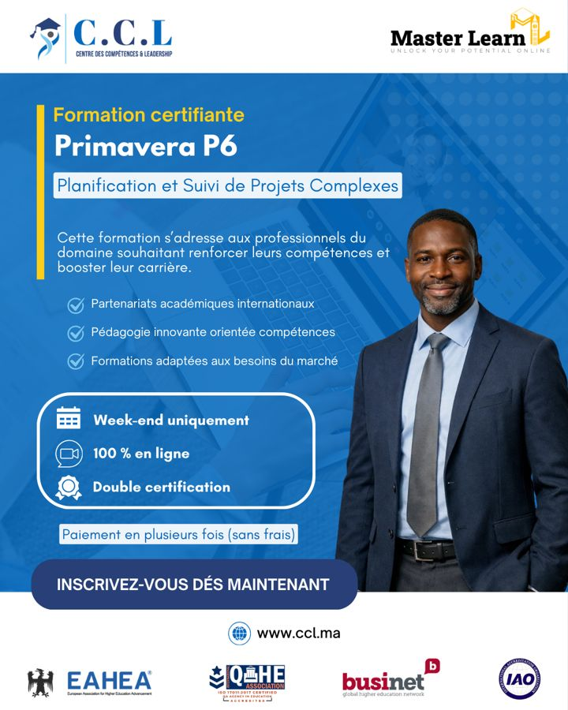
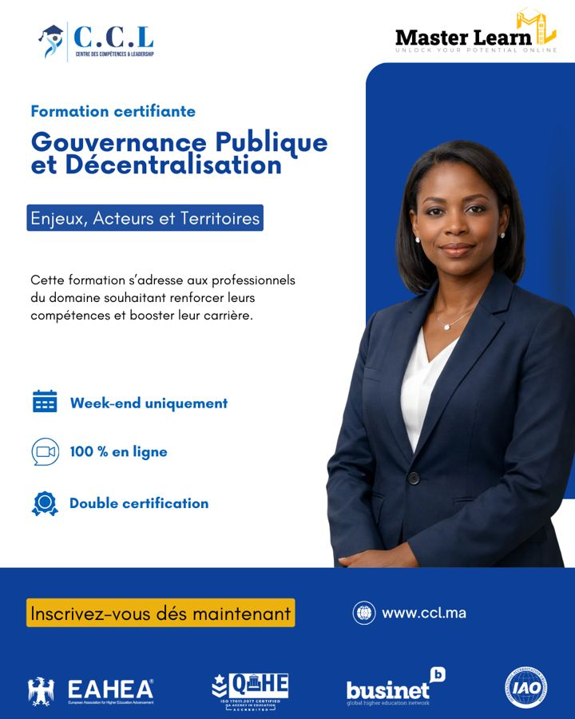
Vidéos verticales pour Reels et StoriesVertical videos for Reels and Stories
Deux vidéos animées par formation : le programme et les débouchés. Format court pensé pour la lecture sans le son.Two animated videos per programme: the syllabus and the career outcomes. Short format designed to work with the sound off.
Étude de cas 2 · Lancement de marqueCase study 2 · Brand launch
Schoolaris
Le contexteContext
Schoolaris est une plateforme de soutien scolaire en ligne au Maroc, du collège au bac : cours vidéo, exercices corrigés, lives avec des professeurs et un tuteur IA.Schoolaris is an online tutoring platform in Morocco, from middle school to the baccalaureate: video lessons, corrected exercises, live classes with teachers and an AI tutor.
L'objectifGoal
Faire connaître une nouvelle marque à la rentrée et convaincre deux publics à la fois : les parents qui paient et les élèves qui utilisent.Build awareness for a new brand at back-to-school time and win over two audiences at once: the parents who pay and the students who use it.
Ce que j'ai faitWhat I did
- Carrousels et visuels de packsCarousels and pack visuals
- Contenus en français et en darijaContent in French and Darija
- ReelsReels
- Modération et réponses aux messagesModeration and replies to messages
La structure, les messages et les briefs sont de moi. Les visuels ont été réalisés en partie par l'équipe graphique, en partie par moi sur Canva.The structure, messaging and briefs are mine. The visuals were made partly by the design team and partly by me in Canva.
Carrousel de présentationIntroduction carousel
4 slides pour expliquer l'offre en 10 secondes : la promesse, les packs par niveau, ce que contient la plateforme, puis l'appel à l'action.4 slides that explain the offer in 10 seconds: the promise, packs by level, what the platform includes, then the call to action.
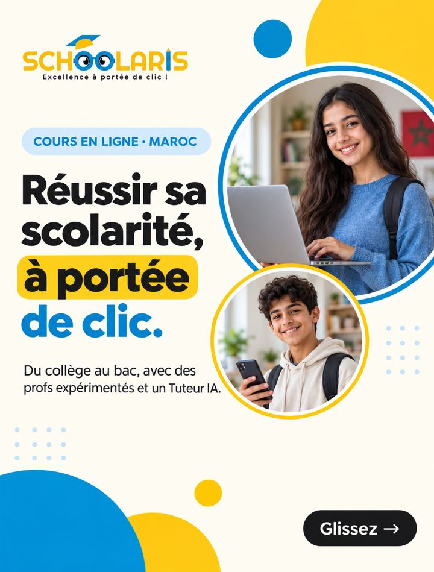
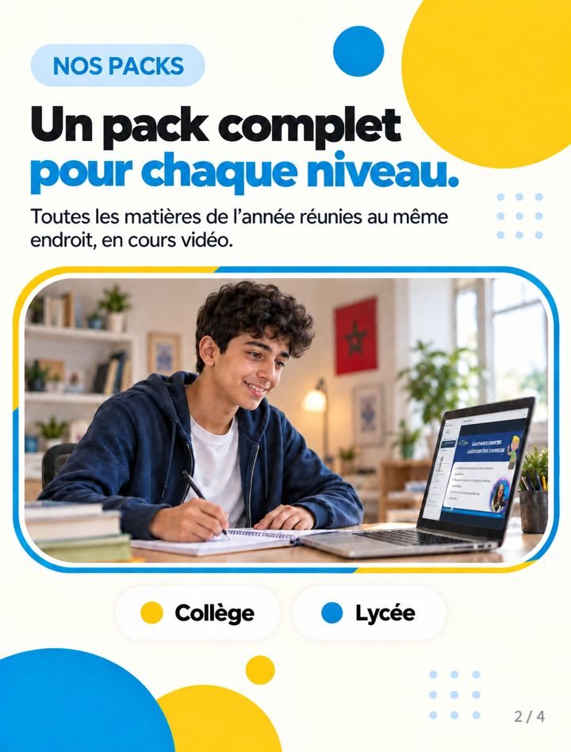
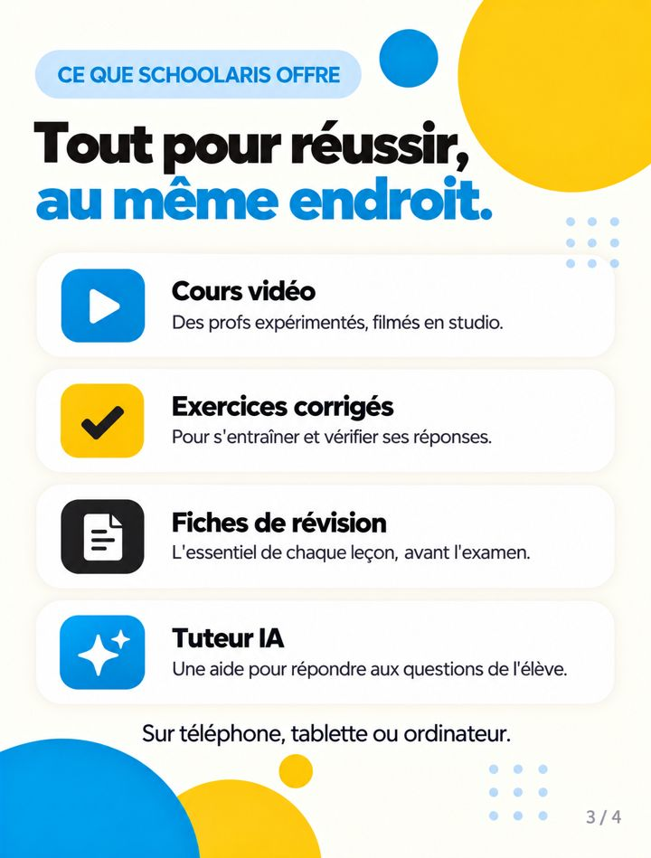
Posts et stories : parents, élèves, darijaPosts and stories: parents, students, Darija
Le même message adapté à chaque public. Les parents voient la réussite et la simplicité. Les élèves voient le live et le tuteur IA. Une version en darija parle directement au public marocain.One message adapted to each audience. Parents see results and simplicity. Students see the live classes and the AI tutor. A Darija version speaks directly to the Moroccan audience.
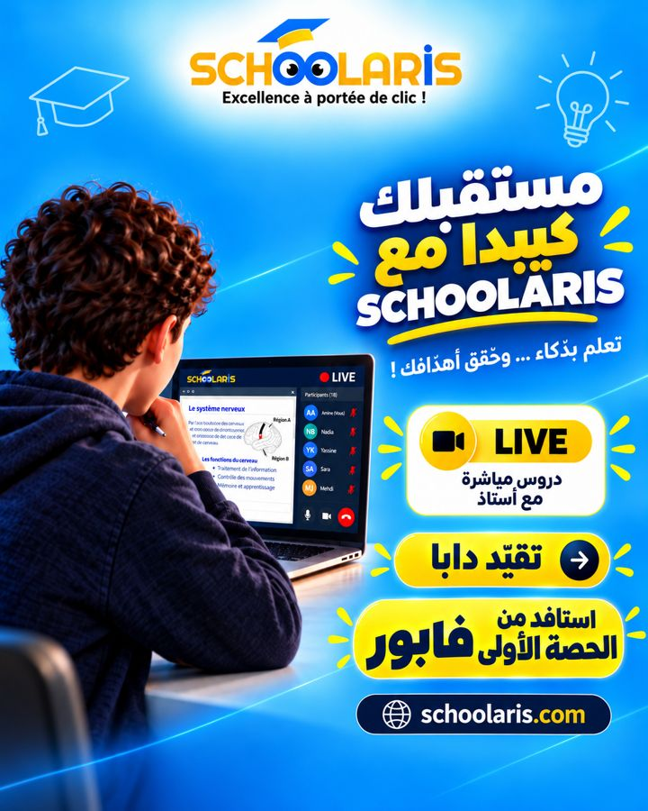
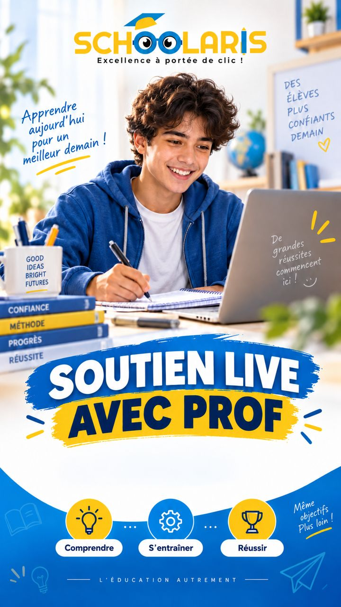
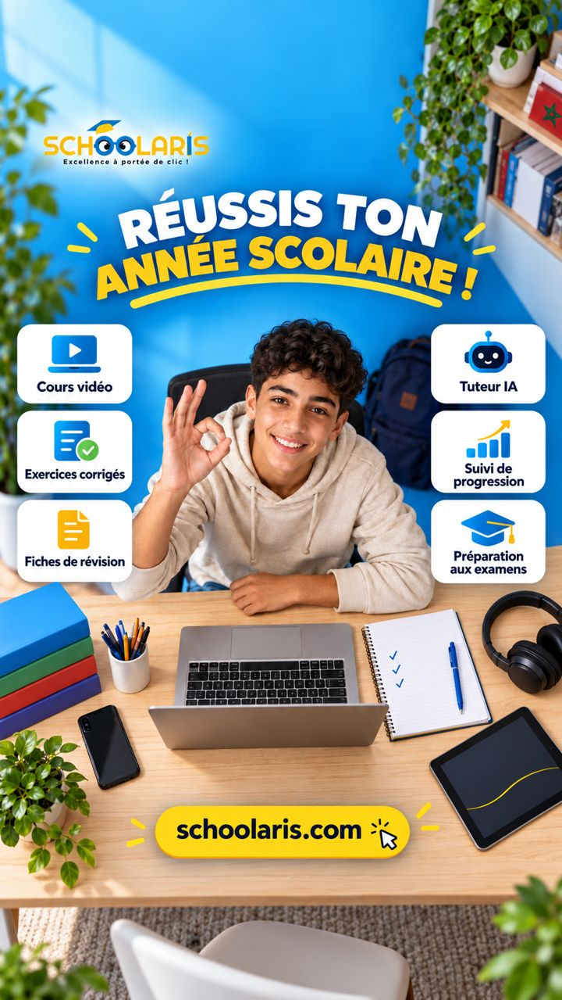
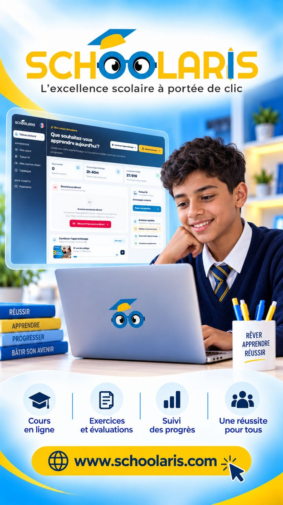
ReelsReels
Reels courts pour faire connaître la marque auprès des élèves et des parents.Short reels to build awareness among students and parents.
OutilsToolkit
Ce que j'utilise au quotidienWhat I use every day
Réseaux sociaux, création & organisationSocial media, design & organisation
Intelligence artificielleArtificial intelligence
Contact
Parlons de votre communauté.Let's talk about your community.
- maryaaitnassir@gmail.com
- TéléphonePhone
- +212 659 84 37 67
- VilleCity
- Marrakech, Maroc